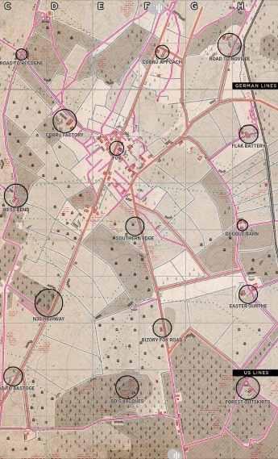

MAPAS
Este es un índice de mapas presentados en Hell Let Loose.
CARENTAN
Ambientado durante la Batalla de Carentan, que se libró entre el 10 y el 14 de junio de 1944, el mapa muestra el enfrentamiento en la Segunda Guerra Mundial entre las fuerzas aerotransportadas de Estados Unidos y Alemania.
Este es el mapa más urbano que ofrece el juego. Por esta razón, es uno de los mapas que más gustan en el juego, ya que tiene una variedad de peleas urbanas y peleas en los campos.
FOY
Ambientada durante el Sitio de Bastogne, un enfrentamiento en diciembre de 1944 entre las fuerzas alemanas y estadounidenses en la ciudad belga de Bastogne, como parte de la Batalla de las Ardenas.
Este mapa presenta un área mayormente plana con bosques dispersos y está todo cubierto de nieve. Los tanques son especialmente útiles en este mapa, ya que en su mayoría es un área abierta, por lo que los tanques tienden a determinar quién gana en este mapa.
La ciudad de Foy en sí es una ruina, pero permite un interesante entorno de lucha urbana.

HILL 400
Ambientado durante la batalla del bosque de Hürtgen, la serie de feroces batallas que libraron las fuerzas estadounidenses y alemanas. La denominación del mapa es el nombre dado por las fuerzas aliadas a una colina de 400,8 metros (1315 pies) de altura ubicada a 1 kilómetro (0,62 millas) al este del centro de Bergstein en Alemania.
Este mapa es principalmente un bosque montañoso, siendo la Colina 400 la colina más grande con muchas fortificaciones. Las colinas dificultan la ubicación de puestos de avanzada y guarniciones, especialmente en algunas áreas. Los comandantes deben ser conscientes de que sus lanzamientos de suministros rodarán cuesta abajo, especialmente si son de Alemania.

HÜRTGEN FOREST
Ambientada durante la batalla del bosque de Hürtgen, la serie de feroces batallas que se libraron desde el 19 de septiembre de 1944 hasta el 10 de febrero de 1945 entre las fuerzas estadounidenses y alemanas en el bosque de Hürtgen, al este de la frontera belga-alemana.
Como sugiere el nombre, este mapa se lucha principalmente en un bosque. Anteriormente, este mapa era más un bosque, pero para la jugabilidad, se cambió para que fuera más abierto con un aspecto de bosque quemado. Este mapa es un mapa centrado en la infantería, pero la armadura utilizada correctamente puede cambiar las reglas del juego.
KURSK
Ambientado durante la Batalla de Kursk, el enfrentamiento que se libró del 5 de julio de 1943 al 23 de agosto de 1943, entre las fuerzas soviéticas y alemanas cerca de la ciudad de Kursk, en la antigua Unión Soviética.
Este mapa consta de campos abiertos y trincheras. Esto hace que los tanques sean vitales para el éxito en este mapa. La infantería debe tratar de adherirse a las trincheras cuando se mueve de un punto a otro, o te dispararán fácilmente desde lejos. Cuando planifique su próximo movimiento a otro punto, debe colocar guarniciones y puestos de avanzada a lo largo de las trincheras donde su equipo pueda saltar fácilmente.
OMAHA BEACH
Ambientado durante el desembarco de Normandía el 6 de junio de 1944. El mapa muestra la invasión aliada de la Francia ocupada por los alemanes en la más occidental de las cinco playas del desembarco con nombre en código.
Este mapa muestra a los Estados Unidos aterrizando en las playas mediante lanchas de desembarco mientras intentan ingresar al círculo asignado (punto fuerte) en la playa. A partir del 26/09/21, este mapa solo está en modo de juego ofensivo, lo que significa que Estados Unidos debe capturar todos los sectores o los alemanes deben defender un punto durante 30 minutos. Debido a esto, los alemanes tienen ventaja en este mapa.
PURPLE HEART LANE
Ambientado antes de la Batalla de Carentan, el 10 de junio de 1944. La denominación del mapa es un apodo utilizado por los soldados e historiadores estadounidenses para la autopista N13 cerca de Carentan, Francia.

SAINTE MARIE EGLISE
Ambientada durante el desembarco de Normandía en la madrugada del 6 de junio de 1944. Las fuerzas estadounidenses ocuparon la ciudad en Mission Boston, lo que la convirtió en una de las primeras ciudades liberadas en la invasión.
SAINTE MARIE DU MONT
Ambientada durante el enfrentamiento militar entre las fuerzas estadounidenses y el ejército alemán el Día D, después de un intenso bombardeo costero por parte de los aliados poco después de la medianoche del 6 de junio de 1944.
STALINGRAD
Ambientada durante la Batalla de Stalingrado, la serie de feroces batallas que se libraron del 23 de agosto de 1942 al 2 de febrero de 1943, entre las fuerzas soviéticas y alemanas en la ciudad de Stalingrado, en el sur de Rusia.
Este mapa está ambientado en la ciudad industrial de Stalingrado. La ciudad es una ruina completa y esto hace que el mapa sea muy plano y abierto con solo unos pocos edificios de madera destruidos para cubrirse. Por esta razón, es un mapa favorito de los jugadores de tanques, pero la infantería lo tiene más difícil ya que debes correr a través del territorio abierto sin cobertura a menudo.

UTAH BEACH
Ambientado durante el desembarco de Normandía el 6 de junio de 1944. El mapa muestra la invasión aliada de la Francia ocupada por los alemanes en la más occidental de las cinco playas del desembarco con nombre en código.